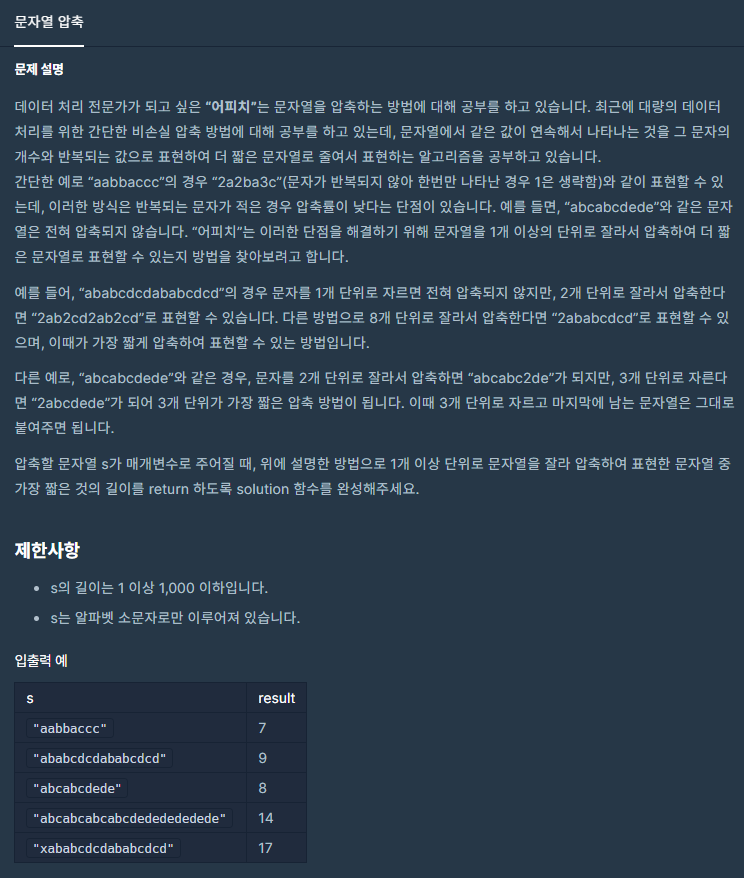
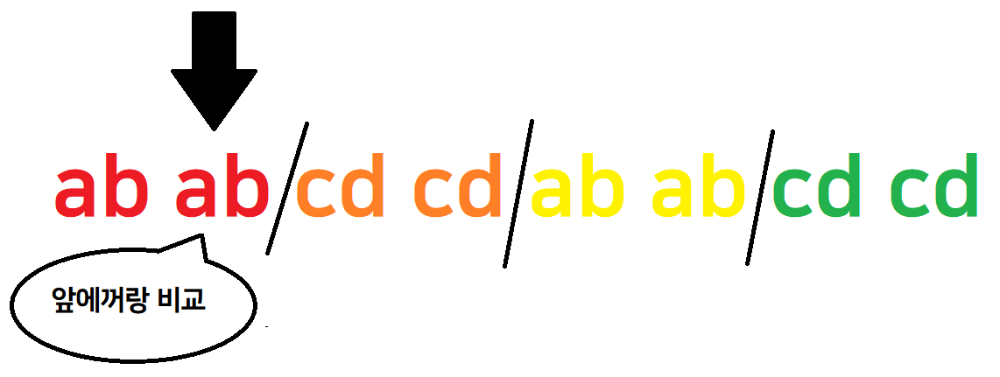
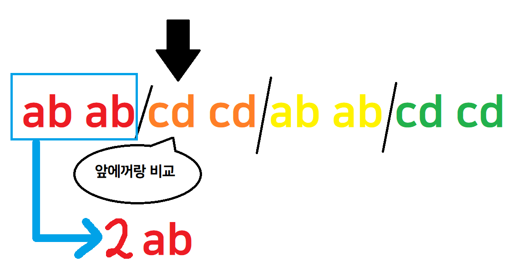

![[Level 2, 카카오 블라인드 채용] 프로그래머스 문자열 압축 코틀린 풀이](/2020/12/16/2020-kakao-blind-recruitment-string-compression/thumbnail.png)
[Level 2, 카카오 블라인드 채용] 프로그래머스 문자열 압축 코틀린 풀이
[Level 2, 카카오 블라인드 채용] 프로그래머스 문자열 압축 코틀린 풀이
문제 소개
이번에 풀어볼 문제는 문자열 압축입니다.

몇가지 패턴으로 중복되는 문자열들을 주고 겹치는 문자들은 몇번 겹치는지 숫자로 표기해서 압축을 시킵니다.
문제를 읽고나니 조금 특이한 런 렝스 부호화라는 것을 알 수 있습니다.
런 렝스 부호화는 1개의 단위로 문자열을 자르지만 이 문제에서는 1개 이상의 단위로 문자열을 자르는 것이죠
문제풀이
잘라!
먼저 문제에서 시키는대로 문자열을 잘라봅시다
원본 문자열이 "ababcdcdababcdcd" 라면 글자수가 16글자니 자르는 방법도 16개가 있겠군요.
하지만 잘 생각해보면 원본 문자열 글자수의 절반 이상은 생각할 필요가 없습니다.
저 문자열을 8글자를 초과해서 자른다면 "ababcdcda", "babcdcd" 와 같이 항상 두개로 쪼개지게 되는데 뒤의 문자열이 항상 앞의 문자열보다 짧기 때문에 절대로 겹치는 일이 없으니 생각할 필요가 없습니다.
그럼 이제 1 ~ 문자열길이의 절반을 돌면서 전부 압축해보고 글자수를 비교하면 되는데
가장 처음 해야할건 문자열 자르기입니다.
2단위로 문자열을 자른다면 [["a", "b"], ["a", "b"], ["c", "d"], ["c", "d"], ["a", "b"], ["a", "b"], ["c", "d"], ["c", "d"]] 처럼 잘라야합니다.
직접 반복을 돌면서 이렇게 구하거나 다른 로직으로 답을 구할 수도 있지만 Kotlin에는 chunked라는 엄청난 함수가 존재하기 때문에 이 방법으로 문제를 풀어볼겁니다.
Want to split a collection into a list of lists with custom size? Use the "chunked" function: https://t.co/KzxOw6x3s1
— Kotlin (@kotlin) November 25, 2020
Need a list of sliding window snapshots with overlap (and custom step size)? Use "windowed": https://t.co/mQ59SmshHB
They can also apply transformations directly! pic.twitter.com/2KsBAXuUnJ
문자열을 자르는건 이 함수를 사용하면 매우 간단합니다.
1 | // (1..s.length/2)하면 문자열 길이 짧은건 (1..0)되어서 오류떠서 +1로 간단하게 처리함 |
–
체크! 압축!
반복을 체크할 차례입니다.

먼저 두번째부터 돌면서 앞에것과 같은지 체크합니다.

앞에꺼랑 다르다는건 바로 앞의 단어들이 겹친거니 합쳐줍니다.
이 과정을 반복해주면 압축이 됩니다.
저는 map을 이용하여 이 부분을 만들건데 겹치지 않으면 "", 겹친다면 "2ab"처럼 압축된 문자열을 반환을 시키고 마지막에["", "2ab", "", "2cd", "", "2ab", "", "2cd"]처럼 만들어진 배열을 .joinToString("")를 이용해서 "2ab2cd2ab2cd"처럼 압축된 문자열을 만들면 됩니다.
이때 count라는 변수를 하나 만들어서 몇번 반복되었는지 담아두었다가 압축시에 사용하면 됩니다.
1 | val value = "${if (count == 1) "" else count.toString()}${chunk[index]}" |
압축된 문자열을 반환하는 부분에서는 if를 사용하여 1인경우는 생략시켰습니다.
문자열 템플릿 밖에서 if를 통해서 처리해도 되지만 전 문자열 템플릿 안에서 if를 사용하여 추가해보았습니다.
1 | (1..s.length/2 + 1).forEach { r -> |
최소!
저희가 필요한건 압축된 문자열이 아니라 몇글자인지만 가져오면 되니까 위의 코드를 살짝 수정해서 정답 함수를 만들면 됩니다.
map을 이용해서 list형태로 모아버리면 min()을 이용해서 최소값을 쉽게 구할 수 있습니다.
따라서 처음에
1 | fun solution(s: String): Int { |
으로 짰던 코드를
1 | fun solution(s: String): Int = (1..s.length/2 + 1).map { r -> |
로 바꿨습니다.
1 | fun solution(s: String): Int = (1..s.length/2 + 1).map { r -> |
완성!
정답 코드
1 | class Solution { |
지나가다가 우연히 알게되었던 chunked()함수를 활용해볼 수 있어서 좋았습니다.
출처: 프로그래머스 코딩 테스트 연습, https://programmers.co.kr/learn/challenges